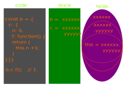

Если объект вложен в другой объект, то this вложенного объекта - это ссылка на ссылку объекта родителя.
Все объекты в браузере вложены в объект window
this === window // true
'use strict';
this === window // true
var vName = 'vName';
function fName () { return 'fName' }
console.log(window.vName); // vName
console.log(window.fName()); // fName
console.log(this.vName); // vName console.log(this.fName()); // fName